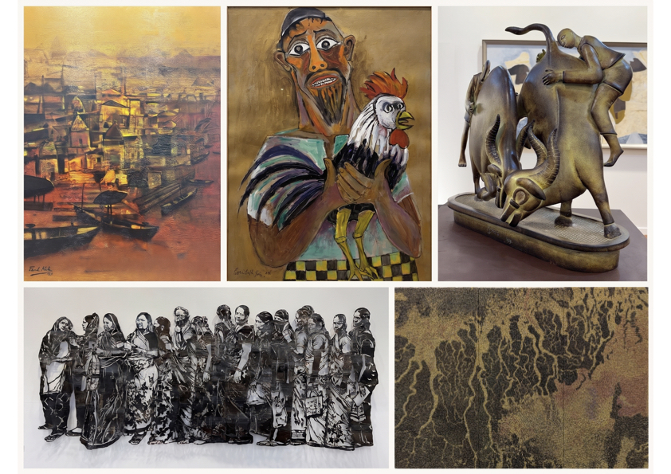

Who Builds Cultural Authority?
An art fair, a French town with a 400-year-old sweet, and how an institution earns its standing.

I went to Art Mumbai in November, my third visit to the fair, and photographed a handful of works that caught my eye—from Richa Arya’s A Story of Women to a Satish Gujral bronze. Some pulled me in with their subject, others with their materials or simply the way they looked.
There were thousands of works, more than anyone could absorb. And each had reached those pavilions through a larger system: an artist’s practice, a gallery that stood behind it, a label, a price, a way of reaching the people walking past. The fair wasn’t just putting paintings in pavilions. It was organising attention, and helping people decide what to look at.
None of that was new to me. The fair just put it in front of me all at once. Why do we treat some works, practices and products as more valuable than others? And who builds the institutions that make those judgements stick?

A town with a sweet and a story
In mid-July 2021, when I was in Paris building my startup, a friend and I went to Moret-sur-Loing, a small medieval town an hour south-east of the city. It’s known for barley sugar. Benedictine nuns started making it there in the early 17th century; the recipe is still a secret; it’s made the same way today. There’s a museum for it in an old mill on an island in the river, and a shop that sells the sweets in replica period tins.
It wasn’t simply someone making a sweet. A whole context had grown around it: the place, its makers, its history, the idea that this small thing deserved attention. And that context is what gives the people who make it their standing.
I keep thinking about Indian towns. Of course the traditions exist, in their thousands. The question is what helps them become visible, admired and worth paying for. Who tells the story, writes the book, sets the standard, runs the museum, trains the next generation, brings the work to a new audience?
Three signals in one week
This November gave an unusual set of clues, all at once.
In Venice, India has a pavilion at the Biennale for the first time in seven years, built by the Ministry of Culture with two private foundations. In Delhi, on 13 November, the same ministry convened philanthropists, businesses and practitioners for Creative India: Collective Possibilities, and its secretary said it is open to for-profit partnerships. And in Mumbai, Art Mumbai’s fourth edition drew 94 exhibitors, 21 of them from abroad.
International visibility, policy convening, a commercial fair. None of them proves the cultural economy is healthy. Together they say the conversation has moved from celebrating Indian culture to a harder question: what does it take to build the institutions and businesses that can sustain it?
How an institution earns its standing
Think of a film festival. Its credibility rests on filmmakers wanting to submit. If nobody comes, the festival can have a grand name and no standing at all.
That’s the mechanism, and it’s simpler than it looks. An institution needs a credible nucleus: a few people whose judgement is already trusted. Their involvement makes others want to take part. Participation brings attention, attention brings more credible people and resources, and if the institution keeps doing useful work and stays consistent, the trust accumulates until its recognition travels. Marketing can bring people to the door. It can’t manufacture judgement for long.
Which means the intelligent first question isn’t how do we start an institution? It’s: what exists today, what is missing, and where is the way in?
![A clay spiral winding clockwise outward from a single dot near the centre. Six stations sit on it, each further out than the last: trusted starting point, a few credible voices; early participation, makers and judges show up; useful work, discovery and real value; trust accumulates, people come back; gravity builds, more attention and resources; standing travels, reputation sticks. Past the sixth the line keeps going, passing outside the first and leaving the frame with an arrowhead — the next turn, wider than the one before.](one-turn-at-a-time.jpg)
Where I could be useful
I’m not writing this as a critic. I’m writing it because I might want to build something here, eventually. A forum, a platform, an enabling business; I don’t yet know the form.
And I’ve realised the first task isn’t a business plan. It’s a map. Who already builds trust in this field? Where do producers struggle despite having recognition? And when does a new intermediary add value, and when is it just one more layer taking its share? Harvey’s warning from the last piece applies to me as much as to anyone: judge an institution by the value it creates and by where that value ends up.
I keep thinking about ecosystems, too. In nature nothing performs every function; parts depend on one another. That may be a better picture of a healthy craft economy than the lone artisan who’s also expected to be a brand, a distributor and a bank. Dastkar, the Crafts Council, IICD and others have been building parts of that infrastructure for decades. If I build anything, it starts by learning what they’ve learned.
My question began with why some cultures have such powerful vocabularies of taste. It’s ended somewhere more practical: how those vocabularies get built, how they earn their authority, and whether there’s room for me in the web around the people who make things.
Not a thesis. A place to begin.
Sources and notes
- Musée du Sucre d’Orge, Moret-sur-Loing (barley sugar made by Benedictine nuns since the early 17th century)
- Paris ZigZag on the sucre d’orge of Moret-sur-Loing
- Ministry of Culture creative-economy convening, Delhi, 13 Nov 2026; Art Mumbai 2026 exhibitor count; India Pavilion at the Venice Biennale (press reports; figures to be re-checked before publishing)
- David Harvey, The Art of Rent (2002)